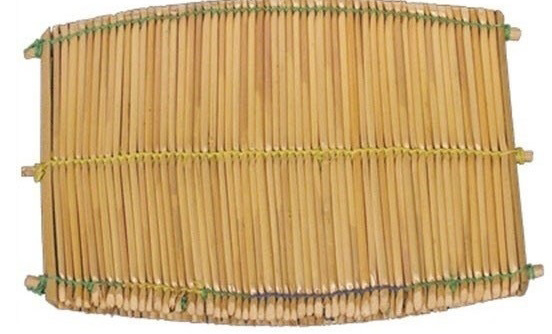
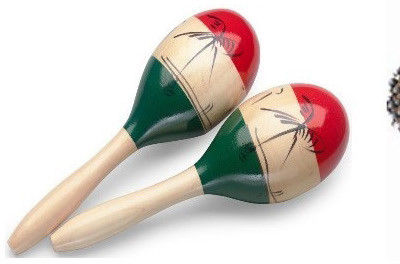
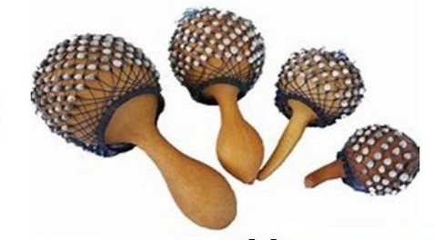
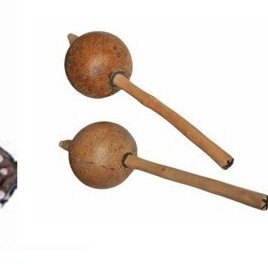

Percussion instruments
These instruments are shaken to produce sounds.
These sounds come from the collision of different objects that were used to make the instruments.
Examples of percussion instruments are maracas, manyanga, kayamba and njuga.
These instruments are placed with grain seeds such as corn or beans, or small pebbles in them.
When these instruments are shaken, the seeds or pebbles inside them collide and produce sounds.
Figure 4 shows some of the percussion instruments.

Kayamba



Maracas